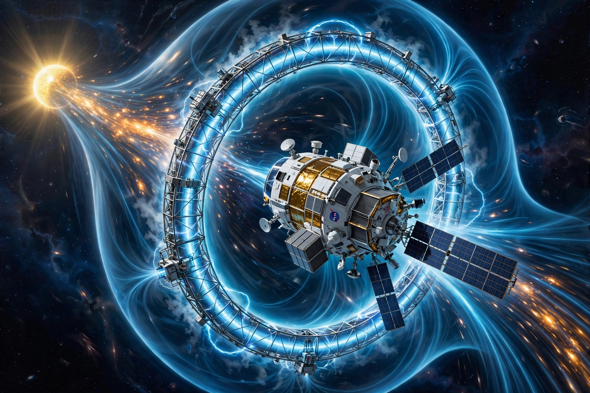

| Magnetic sail | |
| Type | Proposed spacecraft propulsion |
|---|---|
| Proposed by | Dana Andrews and Robert Zubrin (1988–1990) |
| Principle | Magnetic field deflects charged particles of the solar wind, transferring momentum |
A magnetic sail, or magsail, is a proposed method of spacecraft propulsion that would use a static magnetic field to deflect charged particles emitted by the Sun (the solar wind) and thereby impart momentum to accelerate or decelerate a spacecraft. The field is generated by a large loop, or coil, of superconducting wire; the resulting magnetosphere-like bubble can be many tens or hundreds of kilometres across even though the physical loop is far smaller, giving the sail a large effective area without a corresponding physical structure.

The concept was analysed by Dana Andrews and Robert Zubrin at the end of the 1980s, in work presented around 1988–1990. Zubrin later developed the related idea of using a magnetic sail to decelerate an interstellar spacecraft against the interstellar medium and the target star's stellar wind, avoiding the need to carry reaction mass for braking.
The solar wind is a stream of plasma — mainly protons and electrons — flowing outward from the Sun at several hundred kilometres per second. A magnetic field generated by the spacecraft deflects these charged particles; by Newton's third law the reaction force accelerates the spacecraft. Unlike a solar sail, which uses photon pressure, a magnetic sail couples to the charged-particle wind and can in principle also be used against planetary magnetospheres or the interstellar plasma. Thrust declines with distance from the Sun, and the sail can be "tacked" by tilting the field. Practical difficulties include manufacturing and deploying very large superconducting loops, maintaining superconductivity in space, and the mass of the coil and its power and cooling systems.
The mini-magnetospheric plasma propulsion (M2P2) concept, proposed by Robert Winglee, would inflate the magnetic bubble with injected plasma to increase its size. The electric sail of Pekka Janhunen instead uses long charged tethers and the electrostatic deflection of solar-wind ions. A related laboratory device, the magnetic plasma sail, combines the two approaches.
Solar sail · Electric sail · Interstellar travel · Spacecraft propulsion